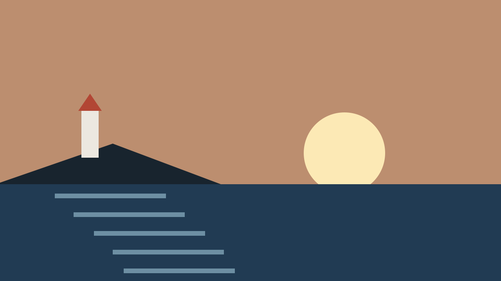

Components
Timeline
A timeline shows clips laid out along time, and a playhead that says where you are. It is the most drag-heavy screen in an editor, so every drag here has a button or a key that does the same thing: the playhead is a slider, the ruler is a place to click, and splitting and trimming are buttons that act at the playhead.
When to use
Use it where order and length in time are the point: a video edit, an audio mix, a day of recordings. Name every clip and show its length. Keep Split and Trim as buttons with words on them.
Examples
Editor
Live: click a clip or press Enter on it to select it, move the playhead into it, then Split or Trim. The buttons say why they are unavailable when they are. Two tracks here: video clips, and one audio clip with a waveform.
Waveform of Low tide ambience: loud for the first 20 seconds, quiet from 0:20 to 0:55, then fairly loud to the end.
The playhead
The head is a circle with a line through every track, and it is a role="slider": Left and Right move it one step (data-step on .timeline, default one second), PageUp and PageDown ten steps, Home and End the ends. Its value is spoken as "0:30 of 1:24". Dragging is an enhancement: the same move is a click on the ruler (or empty track), and the round buttons by the time readout nudge it one step for anyone who cannot drag or press keys.
Clips
A track is a listbox and a clip is an option: a name, a length, and a selected state. Clips follow the selection-control recipe: the solid fill belongs to the selected clip alone, and its frame doubles, so selection is never just a darker tone (compare Selected with Rest, the first two below). Hover and keyboard focus raise the clip as an outline with its hard shadow; a press puts it back down with a light tint, at once. Left and Right move focus between clips; Enter or Space selects. A clip's name and length stay in view while the clip runs off the start of the scroller; when less of the clip is left than its name needs, the name keeps its start on one line and ends with an ellipsis. The tone on a clip is rhythm only (video blue, audio green here); it does not mean anything.
| State | --lift | --fill | What you see |
|---|---|---|---|
| Rest | 0 | 0 | The tone, the 2px frame, the name and the length. |
| Hover | 1 | 0 | Raised 2px with the 4px hard shadow, still an outline. |
| Focus | 1 | 0 | The same, and the ring. |
| Pressed | 0 | 0.15 | Down, tinted with 15% of the tone's fill. |
| Selected | 0 (1 on hover) | 1 | Filled, frame doubled; it stays filled when pressed. |
Waveform
The waveform is a flat silhouette of stepped bars: one SVG <path>, aria-hidden, filled with the clip's own ink so it is always readable on the clip. Give the <svg> data-peaks: one digit from 0 to 9 per second of the source. The script draws as many 3px bars as fit the clip, taking the loudest digit under each, and only the part of the source the clip shows, so a split or a trim cuts the waveform where it cuts the clip, and zoom never stretches a bar. A picture of sound is not the sound, so the same facts are written as text in aria-describedby: loud for the first 20 seconds, quiet from 0:20 to 0:55, then fairly loud to the end. No gradient, no fade.
On a dark stage
Editors are dark so the picture leads. data-theme="dark" on the timeline makes it an island; the playhead line keeps a hard paper edge so it shows on the dark selected clip too (here the first clip, which the playhead is in).
Waveform of Low tide ambience: loud for the first 20 seconds, quiet from 0:20 to 0:55, then fairly loud to the end.
In context
A phone-sized edit screen: the frame under the playhead above, the timeline below it, and the same Cancel and Apply circles every tool uses. The bar here is narrower than the editor's, so its tools show their icons and keep their words as their names; the clip that runs off the start of the track keeps its name in view.

Waveform of Low tide ambience: loud for the first 20 seconds, quiet from 0:20 to 0:55, then fairly loud to the end.
Anatomy
- Bar (
.timeline__bar): the time readout with one-second nudge buttons, the Split / Trim tools, and zoom. Every action is a labelled Button. It never wraps raggedly: the script measures the richest layout that fits (one row; time and zoom over three equal tools with icon and word; words only; icons only, the word kept as the name; zoom beside the tools; zoom under them) and draws it whole. Put each tool's word in a.timeline__word. - Hint (
.timeline__hint): says what Split and Trim would do to which clip, or why they cannot. The buttons point at it witharia-describedby. - Ruler (
.timeline__ruler): ticks and labels, drawn for the current zoom,aria-hidden. Clicking it moves the playhead. A number the frame would cut is hidden until it is whole, so "0:4" never stands in for 0:40. The number the playhead's line would run through moves to the other side of its tick, so the line runs whole from the head to the last track and the number under the head is never mistaken for the time. - Playhead (
.timelinewith__playhead .timeline__head): a line through every track and a 28px head with a 44px hit area. The head is the slider. - Track (
.timeline__track,role="listbox"): a row of clips with a label, as tall as its clips' words.data-kind="audio"adds the waveform's 32px. - Clip (
.timeline__clip,role="option"): a rectangle with a name (up to two lines) and its length right under it, which stick inside the clip while it runs off the scroller.--startand--durplace it, in seconds. - Waveform (
.timeline__wave): stepped bars as one SVG path. - Scroller (
.timeline__scroll): scrolls sideways when the time is longer than the screen. Padded so focus rings and shadows are not clipped; under the last track the padding is the same 8px the tracks keep between them.
API
| Name | Where | Effect |
|---|---|---|
--total | .timeline__body | Length of the timeline, in seconds. Width is --total times --pps. |
--pps | .timeline | Width of one second (default 0.875rem times the zoom). Override to change the scale. |
--start, --dur, --in | .timeline__clip | Where the clip starts on the timeline, how long it is, and where in its source it begins (seconds). Set inline. |
--t | .timeline | The playhead position (seconds). The script keeps it in step with aria-valuenow. |
data-step | .timeline | The playhead's step in seconds (default 1). Page keys move ten steps. |
data-tone | .timeline__clip | Clip colour: a tone slot. Rhythm only. |
data-kind="audio" | .timeline__track, .timeline__clip | A clip with its waveform under its name (the track grows by the waveform's 32px). |
data-timeline | a Button | back, forward, split, trim-start, trim-end, zoom-in, zoom-out. Split and trim act on the selected clip at the playhead. |
sg:timeline-action | event, cancelable | Fired before a split or trim with { action, clip, time }. Call preventDefault() to apply it in your own model. |
sg:timeline-seek / sg:timeline-change | events | The playhead moved; the script changed the clips. |
SG.timeline | JS | init(el), setTime(el, seconds), select(el, clip), refresh(el). |
Accessibility
| Interaction | Behaviour |
|---|---|
| Tab | Bar buttons, then the playhead, then one stop per track (the last clip you were on). The scroller is not a stop: its contents are. |
| Playhead: Left Right PageUp PageDown Home End | One step, ten steps, start, end. The value is announced as "0:30 of 1:24". The view scrolls to keep the head visible. |
| Clips: Left Right Home End | Move focus along the track (no wrap). Enter / Space select. Arrow keys never change what is selected. |
| Split, Trim start, Trim end | Work at the playhead on the selected clip and announce the result ("Split Lighthouse at 0:30. 4 clips on the timeline"). aria-disabled when they cannot, with the reason in the hint. Focus stays on the button. |
| Screen reader | "Video clips, listbox. Lighthouse, 30 seconds, selected, 2 of 3." The waveform is hidden and described in text. |
| Pointer and touch | Drag the head, or click the ruler or empty track. Nothing needs a drag or a pinch: the buttons nudge the playhead, split and trim, and zoom (WCAG 2.5.7, 2.5.1). Every target is 44px. |
| Zoom / text size | The timeline scrolls sideways inside its frame and keeps the playhead in view when its size changes. The bar changes layout as a whole (see Anatomy): at 200% text on a phone the tools show their icons and keep their words as their names; the round buttons, the icon-only tools, the 28px head and the waveform stay their 100% size (chrome), and the readout turns condensed so the nudge pair stays round it. A clip is as tall as its name and length, so 200% text never leaves it a hollow box. When the bar needs three lines, every group starts at the start edge. Times are written, not only drawn, and the hint keeps "at 0:12" together. |
| Reduced motion | No lift travel (a raised clip shows its shadow in place); the view jumps instead of gliding to the playhead. |
| Forced colours | Frames are CanvasText; the selected clip has a 4px frame; the playhead line and ruler take system colours. |
| Right-to-left | Time still runs left to right (direction: ltr), as on a ruler. |
Tokens used
--paper, --paper-2, --ink, --ink-soft, --line, --line-soft, --accent, --tone-bg, --tone-ink, --tone-fill, --tone-on-fill, --bw, --bw-thin, --bw-heavy, --radius-card, --radius-tile, --radius-pill, --hit, --space-1 to --space-4, --type-ctl, --type-meta, --lift, --fill, --dur-hover, --dur-press, --ease-out, --move.